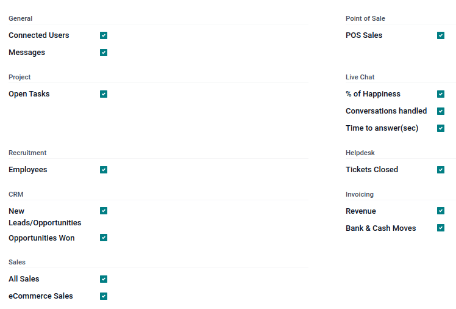

Digest emails¶
Digest Emails are periodic snapshots sent via email to users in an organization that include high-level information about how the business is performing.
To start sending digest emails, begin by navigating to , activate the Digest Emails feature, and click Save.

A variety of settings can be configured for digest emails, such as:
Deciding which KPIs are shared in the digest emails
Determining how often digest emails are sent
Choosing who in the organization receives digest emails
Creating custom digest email templates
Adding additional KPIs (Studio app required)
Note
By default, the Digest Email feature is enabled. Your Odoo Periodic Digest serves as the primary template, which includes all KPI measurements across the Odoo database, and is sent daily to administrators.
Warning
When creating duplicates of databases that have sending capabilities (not testing-mode), the digest emails continue to send from the duplicate database, unless deactivated.
To deactivate the digest email, navigate to . Then, deactivate the Digest Emails feature, by un-ticking the checkbox, and clicking Save. See the section on Deactivate digest email.
Customize default digest email¶
To customize the default digest email (Your Odoo Periodic Digest), go to . Then, select Your Odoo Periodic Digest, and click on the ↗️ (External link) icon, next to the drop-down menu selection.
A pop-up window appears, and presents a variety of editable settings, which include:
Digest Name: the name of the digest email.
Periodicity: control how often digest emails are sent (Daily, Weekly, Monthly, or Quarterly).
Next Send Date: the date on which the digest email will be sent again.
KPIs tab: check/uncheck each calculated KPI that appears in digest emails. A ticked box indicates an active KPI in the digest email. See the section on KPIs.
Recipients tab: add/remove users who receive the digest emails. See the section on Recipients.
Note
The KPIs can be customized using Odoo Studio. Additional costs to the database subscription are incurred should Studio need to be installed. See this section on Custom KPIs with Odoo Studio.

Deactivate digest email¶
To manually deactivate an individual digest email, first navigate to , and click Configure Digest Emails. Then, select the desired digest email from the list that should be deactivated.
Next, click DEACTIVATE FOR EVERYONE to deactivate the digest email for everyone, or UNSUBSCRIBE ME to remove the logged in user from the mailing list. These buttons are located in the top menu, just above the Digest Name.
Manually send digest email¶
To manually send a digest email, first navigate to , and click Configure Digest Emails. Then, select the desired digest email, and click SEND NOW. This button is located in the top menu, just above the Digest Name.
KPIs¶
Pre-configured KPIs can be added to the digest email from the KPIs tab of the digest email template form.
First, navigate to , and click Configure Digest Emails.
Then, select the desired digest email, and open the KPIs tab.
To add a KPI to the digest email, tick the checkbox next to the desired KPI. After all KPIs are added (or deselected), click Save.
The following KPIs are available in the KPIs tab on a digest email template form out-of-box in Odoo:
- General
Connected Users
Messages
- Project
Open Tasks
- Recruitment
Employees
- CRM
New Leads/Opportunities
Opportunities Won
- Sales
All Sales
eCommerce Sales
- Point of Sale
POS Sales
- Live Chat
% of Happiness
Conversations handled
Time to answer (sec)
- Helpdesk
Tickets Closed
- Invoicing
Revenue
Banks and Cash Moves
Recipients¶
Digest email recipients are added from the Recipients tab of the digest email template form.
To add a recipient, navigate to , and click Configure Digest Emails. Then, select the desired digest email, and open the Recipients tab.
To add a recipient, click Add a line, and an Add Recipients pop-up window appears, with all available users to add as recipients.
From the pop-up window, tick the checkbox next to the Name of the user(s), and click the Select button.
To remove a user as a recipient, click the ❌ (remove) icon to the far-right of the user listed in the Recipients tab.
Click Save to implement the changes.
Create digest emails¶
To create a new digest email, navigate to , and click Configure Digest Emails. Then, click Create to create a new digest email.
A separate page, with a blank digest email template appears, and presents a variety of editable settings, including:
Digest Name: the name of the digest email.
Periodicity: control how often digest emails are sent (Daily, Weekly, Monthly, or Quarterly).
Next Send Date: the date on which the digest email will be sent again.
KPIs tab: check/uncheck each calculated KPI that appears in digest emails. A ticked box indicates an active KPI in the digest email. See the section on KPIs.
Recipients tab: add/remove users who receive the digest emails. See the section on Recipients.
From there, give the digest email a Digest Name, specify Periodicity, choose the desired KPIs, and add Recipients, as needed.
After clicking Save, the new custom digest email is available as a selection in the Digest Email field, located in the .
Custom KPIs with Odoo Studio¶
The KPIs on a digest email template form, in the KPIs tab, can be customized using Odoo Studio.
Warning
Additional costs to the database subscription are incurred, should Odoo Studio need to be installed.
To begin, click the 🛠️ (tools) icon in the top-right of the screen. This is the link to the Odoo Studio application.
In order to create additional fields, create two fields on the digest object:
Create a boolean field called
kpi_myfield, and display it in the KPIs tab.Create a computed field called
kpi_myfield_valuethat computes the customized KPI.Select the KPIs in the KPIs tab.
Tip
Here is the source code for the digest.py
file, which guides the programmer in the coding of the computed field.
See also
Users can also click the Recipients tab, and then the vertical three-dot (kebab) menu to edit this view. Either click EDIT LIST VIEW or EDIT FORM VIEW to modify this tab.
Computed values reference table¶
LABEL |
VALUE |
|---|---|
Connected Users |
|
Messages Sent |
|
New Leads |
|
Opportunities Won |
|
Open Tasks |
|
Tickets Closed |
|
% of Happiness |
|
Conversations handled |
|
Time to answer (sec) |
|
All Sales |
|
eCommerce Sales |
|
Revenue |
|
Bank & Cash Moves |
|
POS Sales |
|
New Employees |
|